CSS揭秘笔记2
本节主要介绍一些背景和边框知识。
半透明边框
See the Pen Translucent borders -2 by XmoyKing (@xmoyking) on CodePen.
假设我们想给一个容器设置一层白色背景和一道半透明白色边框，body的背景会从它的半透明边框透上来。我们最开始的尝试可能是这样的：1
2border: 10px solid hsla(0,0%,100%,.5);
background: white;
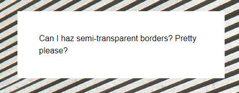
除非你对背景和边框的工作原理有着非常好的理解，否则这个结果可能会令你摸不着头脑。我们的边框去哪儿了啊？而且如果我们连使用半透明颜色都不能实现半透明边框，那我们还有什么办法？！
尽管看起来并不像那么回事，但我们的边框其实是存在的。默认情况下，背景会延伸到边框所在的区域下层。这一点很容易验证，给一个有背景的元素应用一道老土的虚线边框，就可以看出来。即使你使用的是不透明的实色边框，这个事实也不会有任何改变。只不过在上面的例子中，这个特性完全打破了我们的设计意图。我们所做的事情并没有让 body 的背景从半透明白色边框处透上来，而是在半透明白色边框处透出了这个容器自己的纯白实色背景，这实际上得到的效果跟纯白实色的边框看起来完全一样。
在 CSS 2.1 中，这就是背景的工作原理。我们只能接受它并且向前看。谢天谢地，从背景与边框（第三版）（http://w3.org/TR/css3-background）开始，我们可以通过 background-clip 属性来调整上述默认行为所带来的不便。这个属性的初始值是 border-box ，意味着背景会被元素的 border box（边框的外沿框）裁切掉。如果不希望背景侵入边框所在的范围，我们要做的就是把它的值设为 padding-box ，这样浏览器就会用内边距的外沿来把背景裁切掉。
多重边框
box-shadow 方案
See the Pen Multiple borders by XmoyKing (@xmoyking) on CodePen.
目前为止，我们大多数人可能已经用过（或滥用过） box-shadow 来生成投影。不太为人所知的是，它还接受第四个参数（称作“扩张半径”），通过指定正值或负值，可以让投影面积加大或者减小。一个正值的扩张半径加上两个为零的偏移量以及为零的模糊值，得到的“投影”其实就像一道实线边框。1
2background: yellowgreen;
box-shadow: 0 0 0 10px #655;
这并没有什么了不起的，因为你完全可以用 border 属性来生成完全一样的边框效果。不过 box-shadow 的好处在于，它支持逗号分隔语法，我们可以创建任意数量的投影。因此，我们可以非常轻松地在上面的示例中再加上一道 deeppink 颜色的“边框”：1
2
3background: yellowgreen;
box-shadow: 0 0 0 10px #655,
0 0 0 15px deeppink;
唯一需要注意的是， box-shadow 是层层叠加的，第一层投影位于最顶层，依次类推。因此，你需要按此规律调整扩张半径。比如说，在前面的代码中，我们想在外圈再加一道 5px 的外框，那就需要指定扩张半径的值为15px （ 10px+5px ）。如果你愿意，甚至还可以在这些“边框”的底下再加一层常规的投影：1
2
3
4background: yellowgreen;
box-shadow: 0 0 0 10px #655,
0 0 0 15px deeppink,
0 2px 5px 15px rgba(0,0,0,.6);
多重投影解决方案在绝大多数场合都可以很好地工作，但有一些注意事项。
- 投影的行为跟边框不完全一致，因为它不会影响布局，而且也不会受到 box-sizing 属性的影响。不过，你还是可以通过内边距或外边距（这取决于投影是内嵌和还是外扩的）来额外模拟出边框所需要占据的空间。
- 上述方法所创建出的假“边框”出现在元素的外圈。它们并不会响应鼠标事件，比如悬停或点击。如果这一点非常重要，你可以给box-shadow 属性加上 inset 关键字，来使投影绘制在元素的内圈。请注意，此时你需要增加额外的内边距来腾出足够的空隙。
outline 方案
在某些情况下，你可能只需要两层边框，那就可以先设置一层常规边框，再加上 outline （描边）属性来产生外层的边框。这种方法的一大优点在于边框样式十分灵活，不像上面的 box-shadow 方案只能模拟实线边框（假设我们需要产生虚线边框效果， box-shadow 就没辙了）。如果要得到上面的效果，代码可以这样写：1
2
3background: yellowgreen;
border: 10px solid #655;
outline: 5px solid deeppink;
描边的另一个好处在于，你可以通过 outline-offset 属性来控制它跟元素边缘之间的间距，这个属性甚至可以接受负值。这对于某些效果来说非常有用。举个例子，下图就实现了简单的缝边效果。
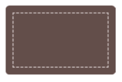
这个方案同样也有一些需要注意的地方。
- 如上所述，它只适用于双层“边框”的场景，因为 outline 并不能接受用逗号分隔的多个值。如果我们需要获得更多层的边框，前一种方案就是我们唯一的选择了。
- 边框不一定会贴合 border-radius 属性产生的圆角，因此如果元素是圆角的，它的描边可能还是直角的（参见图 2-9）。请注意，这种行为被 CSS 工作组认为是一个 bug，因此未来可能会改为贴合 border-radius 圆角。
- 根据 CSS 基本 UI 特性（第三版）规范（http://w3.org/TR/css3-ui）所述，“描边可以不是矩形”。尽管在绝大多数情况下，描边都是矩形的，但如果你想使用这个方法，请切记：最好在不同浏览器中完整地测试最终效果。
灵活的背景定位
很多时候，我们想针对容器某个角对背景图片做偏移定位，在 CSS 2.1 中，我们只能指定距离左上角的偏移量，或者干脆完全靠齐到其他三个角。但是，我们有时希望图片和容器的边角之间能留出一定的空隙（类似内边距的效果）：
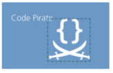
对于具有固定尺寸的容器来说，使用 CSS 2.1 来做到这一点是可能的，但很麻烦：可以基于它自身的尺寸以及我们期望它距离右下角的偏移量，计算出背景图片距离左上角的偏移量，然后再把计算结果设置给 background-position 。当容器元素的尺寸不固定时（因为内容往往是可变的），这就不可能做到了。网页开发者通常只能把 background-position 设置为某个接近 100% 的百分比值，以便近似地得到想要的效果。如你所愿，借助现代的CSS 特性，我们已经拥有了更好的解决方案！
background-position 的扩展语法方案
在 CSS 背景与边框（第三版）（http://w3.org/TR/css3-background）中，background-position 属性已经得到扩展，它允许我们指定背景图片距离任意角的偏移量，只要我们在偏移量前面指定关键字。举例来说，如果想让背景图片跟右边缘保持 20px 的偏移量，同时跟底边保持 10px 的偏移量，可以这样做(结果如上图):1
2background: url(code-pirate.svg) no-repeat #58a;
background-position: right 20px bottom 10px;
最后一步，我们还需要提供一个合适的回退方案。因为对上述方案来说，在不支持 background-position 扩展语法的浏览器中，背景图片会紧贴在左上角（背景图片的默认位置）。这看起来会很奇怪，而且它会干扰到文字的可读性。提供一个回退方案也很简单，就是把老套的bottom right 定位值写进 background 的简写属性中：1
2
3background: url(code-pirate.svg)
no-repeat bottom right #58a;
background-position: right 20px bottom 10px;
background-origin 方案
在给背景图片设置距离某个角的偏移量时，有一种情况极其常见：偏移量与容器的内边距一致。如果采用上面提到的 background-position 的扩展语法方案，代码看起来会是这样的：1
2
3padding: 10px;
background: url(code-pirate.svg) no-repeat #58a;
background-position: right 10px bottom 10px;
我们可以在下图中看到结果。如你所见，它起作用了，但代码不够DRY：每次改动内边距的值时，我们都需要在三个地方更新这个值！谢天谢地，还有一个更简单的办法可以实现这个需求：让它自动地跟着我们设定的内边距走，不用另外声明偏移量的值。
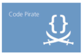
在网页开发生涯中，你很可能多次写过类似 background-position:top left; 这样的代码。你是否曾经有过疑惑：这个 top left 到底是哪个左上角？你可能知道，每个元素身上都存在三个矩形框：border box（边框的外沿框）、padding box（内边距的外沿框）和 content box（内容区的外沿框）。那 background-position 这个属性指定的到底是哪个矩形框的左上角？
默认情况下， background-position 是以 padding box 为准的，这样边框才不会遮住背景图片。因此， top left 默认指的是 padding box 的左上角。不过，在背景与边框（第三版）（http://w3.org/TR/css3-background）中，我们得到了一个新的属性 background-origin ，可以用它来改变这种行为。在默认情况下，它的值是（闭着眼睛也猜得到） padding-box 。如果把它的值改成 content-box （参见下面的代码），我们在 background-position 属性中使用的边角关键字将会以内容区的边缘作为基准（也就是说，此时背景图片距离边角的偏移量就跟内边距保持一致了）：1
2
3
4padding: 10px;
background: url("code-pirate.svg") no-repeat #58a
bottom right; /* 或 100% 100% */
background-origin: content-box;
它的视觉效果跟上图是完全一样的，但我们的代码变得更加 DRY了。另外别忘了，在必要时可以把这两种技巧组合起来！如果你想让偏移量与内边距稍稍有些不同（比如稍微收敛或超出），那么可以在使用background-origin: content-box 的同时，再通过 background-position的扩展语法来设置这些额外的偏移量。
calc() 方案
把背景图片定位到距离底边 10px 且距离右边 20px 的位置。如果我们仍然以左上角偏移的思路来考虑，其实就是希望它有一个 100% - 20px 的水平偏移量，以及 100% - 10px 的垂直偏移量。 calc() 函数允许我们执行此类运算，它可以完美地在background-position 属性中使用：1
2background: url("code-pirate.svg") no-repeat;
background-position: calc(100% - 20px) calc(100% - 10px);
边框内圆角
有时我们需要一个容器，只在内侧有圆角，而边框或描边的四个角在外部仍然保持直角的形状，如图所示。这是一个有趣的效果，目前还没有被滥用。用两个元素可以实现这个效果，这并没有什么特别的：
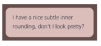
1 | <div class="something-meaningful"><div> |
这个方法很好，但要求我们使用两个元素，而我们只需要一个元素。有没有办法可以只用一个元素达成同样的效果呢？
其实上述方案要更加灵活一些，因为它允许我们充分运用背景的能力。举个例子，如果我们希望这一圈“边框”不只是纯色的，而是要加一层淡淡的纹理，它也可以很容易地做到。不过，如果只需要达成简单的实色效果，那我们就还有另一条路可走，只需用到一个元素（但这个办法有一些 hack的味道）。我们来看看以下 CSS 代码：1
2
3
4
5background: tan;
border-radius: .8em;
padding: 1em;
box-shadow: 0 0 0 .6em #655;
outline: .6em solid #655;
你能猜到视觉效果是怎样的吗？它产生的效果正如图所示。我们基本上受益于两个事实：描边并不会跟着元素的圆角走（因而显示出直角），但 box-shadow 却是会的。因此，如果我们把这两者叠加到一起， box-shadow 会刚好填补描边和容器圆角之间的空隙，这两者的组合达成了我们想要的效果,把投影和描边显示为不同的颜色，从而在视觉上提供了更清晰的解释。
请注意，我们为 box-shadow 属性指定的扩张值并不一定等于描边的宽度，我们只需要指定一个足够填补“空隙”的扩张值就可以了。事实上，指定一个等于描边宽度的扩张值在某些浏览器中可能会得到渲染异常，因此我推荐一个稍小些的值。这又引出了另一个问题：到底多大的投影扩张值可以填补这些空隙呢？
为了解答这个问题，我们需要回忆起中学时学过的勾股定理，用来计算直角三角形各边的长度.
你可能还很纳闷，中学几何到底是怎么跟我们的内圆角效果扯上关系的？关于怎样用它来计算我们需要的最小扩张值，请看图形化的解释。在我们的例子中， border-radius 是 .8em ，那么最小的扩张值就是 ( 2开平方 - 1 ) * 0.8 ≈ 0.33137085em 。我们要做的就是把它稍微向上取个整，把 .34em 设置为投影的扩张半径。为了避免每次都要计算，你可以直接使用圆角半径的一半，因为 2开平方 − 1 < 0.5。请注意，该计算过程揭示了这个方法的另一个限制：为了让这个效果得以达成，扩张半径需要比描边的宽度值小，但它同时又要比 ( 2开平方 - 1 )*r大（这里的 r 表示 border-radius ）。这意味着，如果描边的宽度比( 2开平方 - 1 )*r小，那我们是不可能用这个方法达成该效果的。
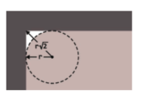
条纹背景
不论是在网页设计中，还是在其他传统媒介中（比如杂志和墙纸等），各种尺寸、颜色、角度的条纹图案在视觉设计中无处不在。要想在网页中实现条纹图案，其过程还远远不够理想。通常，我们的方法是创建一个单独的位图文件，然后每次需要做些调整时，都用图像编辑器来修改它。可能有人试过用 SVG 来取代位图，但这样还是会有一个独立的文件，而且它的语法也远远不够友好。如果可以直接在 CSS 中创建条纹图案，那该有多棒啊！你可能会惊讶地发现，我们居然真的可以。
假设我们有一条基本的垂直线性渐变，颜色从 #fb3 过渡到 #58a，background: linear-gradient(#fb3, #58a);。
现在，让我们试着把这两个色标拉近一点，background: linear-gradient(#fb3 20%, #58a 80%);。
现在容器顶部的 20% 区域被填充为 #fb3 实色，而底部 20% 区域被填充为 #58a 实色。真正的渐变只出现在容器 60% 的高度区域。如果我们把两个色标继续拉近（分别改为 40% 和 60%），那真正的渐变区域就变得更窄了。你是不是开始好奇，如果我们把两个色标重合在一起，会发生什么？background: linear-gradient(#fb3 50%, #58a 50%);
“如果多个色标具有相同的位置，它们会产生一个无限小的过渡区域，过渡的起止色分别是第一个和最后一个指定值。从效果上看，颜色会在那个位置突然变化，而不是一个平滑的渐变过程。” —— CSS 图像（第三版）（http://w3.org/TR/css3-images）
你在图中可以看到，已经没有任何渐变效果了，只有两块实色，各占据了 background-image 一半的面积。本质上，我们已经创建了两条巨大的水平条纹。
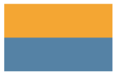
因为渐变是一种由代码生成的图像，我们能像对待其他任何背景图像那样对待它，而且还可以通过 background-size 来调整其尺寸：1
2background: linear-gradient(#fb3 50%, #58a 50%);
background-size: 100% 30px;
我们把这两条条纹的高度都缩小到了 15px 。由于背景在默认情况下是重复平铺的，整个容器其实已经被填满了水平条纹。还可以用相同的方法来创建不等宽的条纹，只需调整色标的位置值即可。1
2background: linear-gradient(#fb3 30%, #58a 30%);
background-size: 100% 30px;
为了避免每次改动条纹宽度时都要修改两个数字，我们可以再次从规范那里找到捷径。
“如果某个色标的位置值比整个列表中在它之前的色标的位置值都要小，则该色标的位置值会被设置为它前面所有色标位置值的最大值。” —— CSS 图像（第三版）（http://w3.org/TR/css3-images）
这意味着，如果我们把第二个色标的位置值设置为 0 ，那它的位置就总是会被浏览器调整为前一个色标的位置值，这个结果正是我们想要的。因此，下面的代码会产生完全一样的条纹背景，但代码会更加DRY：1
2background: linear-gradient(#fb3 30%, #58a 0);
background-size: 100% 30px;
如果要创建超过两种颜色的条纹，也是很容易的。举例来说，下面的代码可以生成三种颜色的水平条纹1
2background: linear-gradient(#fb3 33.3%, #58a 0, #58a 66.6%, yellowgreen 0);
background-size: 100% 45px;
See the Pen Horizontal stripes by XmoyKing (@xmoyking) on CodePen.
垂直条纹
水平条纹是最容易用代码写出来的，但我们在网页上看到的条纹图案并不都是水平的。有些条纹是垂直的，而且某些形态的斜条纹或许更受欢迎，或者看起来更加有趣。幸运的是，CSS 渐变同样也能帮助我们创建出这些效果，只是难度稍有不同。
垂直条纹的代码跟水平条纹几乎是一样的，差别主要在于：我们需要在开头加上一个额外的参数来指定渐变的方向。在水平条纹的代码中，我们其实也可以加上这个参数，只不过它的默认值 to bottom 本来就跟我们的意图一致，于是就省略了。最后，我们还需要把 background-size 的值颠倒一下，原因应该不用多说了吧：1
2
3background: linear-gradient(to right, /* 或 90deg */
#fb3 50%, #58a 0);
background-size: 30px 100%;
斜向条纹
在完成了水平和垂直条纹之后，我们可能会顺着往下想：如果我们再次改变 background-size 的值和渐变的方向，是不是就可以得到斜向（比如45°）的条纹图案呢？比如这样1
2background: linear-gradient(45deg, #fb3 50%, #58a 0);
background-size: 30px 30px;
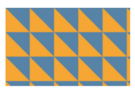
可以发现，这个办法行不通。原因在于我们只是把每个“贴片”内部的渐变旋转了 45°，而不是把整个重复的背景都旋转了。试着回忆一下我们以前用位图来生成斜向条纹时是怎么做的吧，单个贴片包含了四条条纹，而不是两条，只有这样才有可能做到无缝拼接。它正是我们需要在 CSS 代码中重新实现的贴片，因此我们需要增加一些色标：1
2
3
4background: linear-gradient(45deg,
#fb3 25%, #58a 0, #58a 50%,
#fb3 0, #fb3 75%, #58a 0);
background-size: 30px 30px;
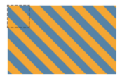
我们可以在上图中看到结果。如你所见，我们成功地创建了斜向条纹，但这些条纹看起来要比我们在前面制作的水平和垂直条纹细一些。为了理解这其中的道理，我们需要再次回忆起在学校里学过的勾股定理，用它来计算直角三角形的斜边长度。这个定理表示，当 a 和 b 是直角三角形的直角边时，对于一个 45°的直角三角形来说，它的两条直角边是等长的，在我们的斜向条纹中，背景尺寸指定的长度值决定了直角三角形的斜边长度，但条纹的宽度实际上是直角三角形的高。在图中可以看到图形化的解释。
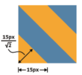
See the Pen Diagonal stripes by XmoyKing (@xmoyking) on CodePen.
更好的斜向条纹
在前面的段落中展示的方法还不够灵活。假设我们想让条纹不是 45°而是 60°怎么办？或者是 30°？又或者是 3.141 592 653 5°？如果我们只是把渐变的角度改一下，那么结果看起来会相当糟糕。
幸运的是，我们还有更好的方法来创建斜向条纹。一个鲜为人知的真相是 linear-gradient() 和 radial-gradient() 还各有一个循环式的加强版： repeating-linear-gradient() 和 repeating-radial-gradient() 。它们的工作方式跟前两者类似，只有一点不同：色标是无限循环重复的，直到填满整个背景。下面是一个重复渐变的例子1
2
3
4
5
6
7
8background: repeating-linear-gradient(45deg, #fb3, #58a 30px);
/* 它相当于下面这个简单的线性渐变: */
background: linear-gradient(45deg,
#fb3, #58a 30px,
#fb3 30px, #58a 60px,
#fb3 60px, #58a 90px,
#fb3 90px, #58a 120px,
#fb3 120px, #58a 150px, ...);
重复线性渐变完美适用于——你已经猜到了吧——条纹效果！这得益于它们可以无限循环的天赋，一个渐变图案就可自动重复并铺满整个背景。因此，我们再也不需要去操心如何创建出可以无缝拼接的贴片了。
第一个明显的好处就是减少了重复：我们要改动任何颜色时只需要修改两处，而不是原来的三处。另外一点也很重要，我们现在是在渐变的色标中指定长度，而不是原来的 background-size 。这里的 background-size 是初始值，对渐变来说就是以整个元素的范围进行填充。这意味着代码中的长度值更加直观，因为这些长度是直接在渐变轴上进行度量的，直接代表了条纹自身的宽度。我们再也不需要计算什么 根号2 了！
不过这还不是最大的好处。最大的好处在于，现在我们可以随心所欲地改变渐变的角度了，指哪儿打哪儿，再也不需要苦苦思索如何生成一个无缝贴片。举例来说，我们苦苦追寻的 60°条纹只需这样写即可1
background: repeating-linear-gradient(60deg, #fb3, #fb3 15px, #58a 0, #58a 30px);
这简单到只需要改改角度就可以了！请注意，在这个方法中，不论条纹的角度如何，我们在创建双色条纹时都需要用到四个色标。这意味着，我们最好用前面的方法来实现水平或垂直的条纹，而用这种方法来实现斜向条纹。另外，在处理 45°条纹时，我们甚至可以把这两种方法结合起来，本质上是通过重复线性渐变来简化贴片的代码：1
2background: repeating-linear-gradient(45deg, #fb3 0, #fb3 25%, #58a 0, #58a 50%);
background-size: 42.426406871px 42.426406871px;
灵活的同色系条纹
在大多数情况下，我们想要的条纹图案并不是由差异极大的几种颜色组成的，这些颜色往往属于同一色系，只是在明度方面有着轻微的差异。举个例子，我们来看看这个条纹图案：1
background: repeating-linear-gradient(30deg, #79b, #79b 15px, #58a 0, #58a 30px);
条纹是由一个主色调（ #58a ）和它的浅色
变体所组成的。但是，这两种颜色之间的关系在代码中并没有体现出来。此外，如果我们想要改变这个条纹的主色调，甚至需要修改四处！
幸运的是，还有一种更好的方法：不再为每种条纹单独指定颜色，而是把最深的颜色指定为背景色，同时把半透明白色的条纹叠加在背景色之上来得到浅色条纹：1
2
3
4
5background: #58a;
background-image: repeating-linear-gradient(30deg,
hsla(0,0%,100%,.1),
hsla(0,0%,100%,.1) 15px,
transparent 0, transparent 30px);
See the Pen Subtle stripes by XmoyKing (@xmoyking) on CodePen.
关于未来 包含两个位置信息的色标
根据 CSS 图像（第四版）（http://w3.org/TR/css4-images）计划新增的一个简化语法来看，很快我们就可以在同一个色标上指定两个位置值了。这个简写语法的含义相当于两个连续的色标具有相同的颜色和不同的位置，这个特性在创建渐变图案时是十分有用的。举个例子，用这个新语法来生成斜向条纹：`background: repeating-linear-gradient(60deg, #fb3 0 15px, #58a 0 30px);`
这样的代码不仅更加简单，而且显然是更加 DRY 的：颜色值再也不需要重复了，因此我们在改动颜色时只需要修改一处。遗憾的是，当下，还没有任何浏览器支持这个特性。
复杂的背景图案
在上篇攻略中，我们学会了如何用 CSS 渐变来创建各种条纹图案。但是条纹并不是我们要实现的唯一背景图案，它甚至只是几何图案中最简单的一种。我们还需要很多其他不同类型的图案，比如网格、波点、棋盘等。
幸运的是，CSS 渐变在实现这些图案时也能大展拳脚。用 CSS 渐变来创建任何种类的几何图案几乎都是可能的，只不过有时这种方法不太实际。我们可能稍不留神就会弄出一大块无法维护的代码。CSS 图案可以算是一个值得使用 CSS 预处理器（比如 Sass，http://sass-lang.com）来减少代码冗余的案例，因为最终图案越复杂，相应的代码就会变得越来越不DRY。
CSS3 图 案 库（ 位 于 lea.verou.me/css3patterns）展示了CSS 渐变早在 2011 年就能够实现的效果。在 2011 年到 2012 年间，几乎每篇文章、每本书、每场技术会议在提到 CSS 渐变时都会提到这个图案库；而且几大浏览器厂商也曾用它来调校自己在CSS 渐变上的实现。但是，并不是里面的每个例子都适用于生产环境。其中的某些例子只是用来展示可能性，而且它们用到的代码极度冗长繁琐。对于这些例子来说，SVG 可能是更好的选择。关于 SVG 图案的演示，请访问philbit.com/svgpatterns，这个网站是 CSS 图案库的 SVG 版实现
在本篇攻略中，我们将深入讨论如何创建那些简单而常用的图案。
网格
只使用一个渐变时，我们能创建的图案并不多。当我们把多个渐变图案组合起来，让它们透过彼此的透明区域显现时，神奇的事情就发生了。按照这个思路，我们首先想到的可能就是把水平和垂直的条纹叠加起来，从而得到各种样式的网格。举例来说，下面的代码会创建桌布（方格纹）图案。1
2
3
4
5
6background: white;
background-image: linear-gradient(90deg,
rgba(200,0,0,.5) 50%, transparent 0),
linear-gradient(
rgba(200,0,0,.5) 50%, transparent 0);
background-size: 30px 30px;
在某些情况下，我们希望网格中每个格子的大小可以调整，而网格线条的粗细同时保持固定。举例来说，类似图纸辅助线的网格就是这种情况。这是一个非常好的例子，展示了使用长度而不是百分比作为色标的场景：1
2
3
4background: #58a;
background-image: linear-gradient(white 1px, transparent 0),
linear-gradient(90deg, white 1px, transparent 0);
background-size: 30px 30px;
我们得到的结果就是一幅用 1px 白线画出来的 30px 大小的网格图案。与“灵活的同色系条纹”一节中的例子类似，主色调在这里也起到了回退颜色的作用。
该网格是一个很好的例子，说明图案可以用合理的、可维护的（尽管还不是完全 DRY 的）CSS 代码生成。
当需要改变网格的尺寸、线宽或者任何颜色时，我们可以很容易地找到需要编辑的地方。
在改变图案的任何一个要素时，我们不需要做大量的修改，而是只需修改一到两个值。
代码很简短，只有四行，共计 170 字节。SVG 的代码不见得会比它更短
我们甚至可以把两幅不同线宽、不同颜色的网格图案叠加起来，得到一个更加逼真的蓝图网格1
2
3
4
5
6
7
8
9
10background: #58a;
background-image:
linear-gradient(white 2px, transparent 0),
linear-gradient(90deg, white 2px, transparent 0),
linear-gradient(hsla(0,0%,100%,.3) 1px,
transparent 0),
linear-gradient(90deg, hsla(0,0%,100%,.3) 1px,
transparent 0);
background-size: 75px 75px, 75px 75px,
15px 15px, 15px 15px;
See the Pen Blueprint grid by XmoyKing (@xmoyking) on CodePen.
波点
目前为止，我们一直在用线性渐变生成图案。但是，径向渐变同样也是非常实用的，因为它允许我们创建圆形、椭圆，或是它们的一部分。径向渐变能够创建的最简单的图案是圆点的阵列1
2
3background: #655;
background-image: radial-gradient(tan 30%, transparent 0);
background-size: 30px 30px;
坦白地说，目前的这个样子还不是很实用。别着急，我们可以生成两层圆点阵列图案，并把它们的背景定位错开，这样就可以得到真正的波点图案了
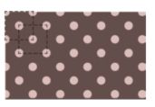
1 | background: #655; |
请注意，为了达到效果，第二层背景的偏移定位值必须是贴片宽高的一半。不幸的是，这意味着如果要改动贴片的尺寸，需要修改四处。虽然可能还没到不可收拾的地步，但这样的代码就快要跌入不可维护的深渊。如果你在使用预处理器，就赶紧把它转换成这个 mixin 吧：1
2
3
4
5
6
7
8@mixin polka($size, $dot, $base, $accent) {
background: $base;
background-image:
radial-gradient($accent $dot, transparent 0),
radial-gradient($accent $dot, transparent 0);
background-size: $size $size;
background-position: 0 0, $size/2 $size/2;
}
以后在创建波点图案时，我们就可以像这样调用它：@include polka(30px, 30%, #655, tan);
棋盘
棋盘图案在很多场景下都会用到。比如说，相对于单调的纯色背景来说，具有细微对比度的棋盘图案可能就是一个有趣的替代品。在各种应用程序的界面中，灰色的棋盘图案已经是用于表示透明色的事实标准。在 CSS 中创建棋盘图案是可能的，只不过实现过程可能比我们想像中的要“绕”一些。棋盘图案是可以通过平铺生成的，平铺成这个图案的典型贴片包含两种
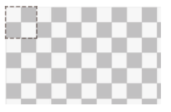
不同颜色的方块，且相互间隔，就像上图中所标示出的那样。它貌似可以在 CSS 中很容易地重现出来：只需要创建两个不同背景定位的方块就可以了，没错吧？然而并非如此。是的，在技术上，我们可以用 CSS 渐变来创建平铺的方块，但每个方块的周围是不会有空隙的，因此最终的结果看起来就是一片实色。总的来说，只用一层 CSS 渐变无法创建四周有空隙的方块。如果你对此还怀有疑议，不妨找找看有没有一种渐变可以在重复平铺时产生如下图所示的图像。
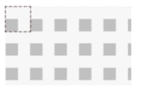
这里的窍门在于用两个直角三角形来拼合出我们想要的方块。我们已经知道了如何创建直角三角形。（还记得我们在图 2-29 中尝试实现斜向条纹时所遭遇的失败吗？）为了唤起你的记忆，我们再来看看当时的代码（这里换用了另一种颜色和透明色）：1
2
3background: #eee;
background-image: linear-gradient(45deg, #bbb 50%, transparent 0);
background-size: 30px 30px;
你可能还不明白这个方法是怎么发挥作用的。没错，如果我们尝试直接用两个三角形组合正方形，可能只会得到一片实色。但是，如果我们把这些三角形的直角边缩短到原来的一半，从而只占据贴片面积的1/8 ，而不是1/2，会怎么样？要满足这一点，我们只需简单地把色标的位置值从 50% 改为 25% 就可以了。然后我们得到的效果会如图所示。
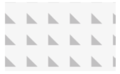
与此类似，如果我们把色标的顺序反转，就可以创建相反方向的三角形,你能猜到把它们组合在一起时会发生什么吗？代码是这样的1
2
3
4
5background: #eee;
background-image:
linear-gradient(45deg, #bbb 25%, transparent 0),
linear-gradient(45deg, transparent 75%, #bbb 0);
background-size: 30px 30px;
乍看起来，这样的效果似乎并不是我们想要的。但是，我们只需要把第二层渐变在水平和垂直方向均移动贴片长度的一半，就可以把它们拼合成一个完整的方块：1
2
3
4
5
6background: #eee;
background-image:
linear-gradient(45deg, #bbb 25%, transparent 0),
linear-gradient(45deg, transparent 75%, #bbb 0);
background-position: 0 0, 15px 15px;
background-size: 30px 30px;
你能猜到它的结果是什么样子吗？就是我们一直想要实现的效果。请注意这本质上只是棋盘的一半。要把它转变为一幅完整的棋盘，我们只需要把现有的这一组渐变重复一份，从而创建出另一组正方形，并且偏移它们的定位值。这有点像我们在波点图案中所用到的技巧：1
2
3
4
5
6
7
8
9background: #eee;
background-image:
linear-gradient(45deg, #bbb 25%, transparent 0),
linear-gradient(45deg, transparent 75%, #bbb 0),
linear-gradient(45deg, #bbb 25%, transparent 0),
linear-gradient(45deg, transparent 75%, #bbb 0);
background-position: 0 0, 15px 15px,
15px 15px, 30px 30px;
background-size: 30px 30px;
最终结果就是一幅棋盘图案。其实这段代码还可以稍稍优化，比如我们可以把这些处在贴片顶角的三角形两两组合起来（即把第一组和第二组合并为一层渐变，把第三组和第四组合并为一层渐变），然后还可以把深灰色改成半透明的黑色——这样我们只需要修改底色就可以改变整个棋盘的色调，不需要单独调整各层渐变的色标了：1
2
3
4
5
6
7
8
9
10background: #eee;
background-image:
linear-gradient(45deg,
rgba(0,0,0,.25) 25%, transparent 0,
transparent 75%, rgba(0,0,0,.25) 0),
linear-gradient(45deg,
rgba(0,0,0,.25) 25%, transparent 0,
transparent 75%, rgba(0,0,0,.25) 0);
background-position: 0 0, 15px 15px;
background-size: 30px 30px;
任何情况下，这样的代码量都不能算少，所以转到 SVG 方案可能是更好的选择。图中的贴片如果用 SVG 来实现，就像下面这样简短：1
2
3
4
5<svg xmlns="http://www.w3.org/2000/svg"
width="100" height="100" fill-opacity=".25" >
<rect x="50" width="50" height="50" />
<rect y="50" width="50" height="50" />
</svg>
可能有人会说：“可是 CSS 渐变能省掉 HTTP 请求啊！”其实，对于现代浏览器来说，我们可以把 SVG 文件以 data URI 的方式内嵌到样式表中，甚至不需要用 base64 或 URLencode 来对其编码：1
2
3
4
5
6
7
8background: #eee url('data:image/svg+xml,\
<svg xmlns="http://www.w3.org/2000/svg" \
width="100" height="100" \
fill-opacity=".25">\
<rect x="50" width="50" height="50" /> \
<rect y="50" width="50" height="50" /> \
</svg>');
background-size: 30px 30px;
VG 的版本不仅少了 40 个字符，而且在代码冗余度方面也明显更低。举例来说，我们在改颜色时只需要改一处，而在改尺寸时只需要改两处。
See the Pen Checkerboard with SVG by XmoyKing (@xmoyking) on CodePen.
伪随机背景
重复平铺的几何图案很美观，但看起来可能有一些呆板。其实自然界中的事物都不是以无限平铺的方式存在的。即使重复，也往往伴随着多样性和随机性。比如花园里的花朵：它们因为排列整齐而生出美感，也会因为稍稍错落而透出情趣。没有两朵花是完全一样的。这就是为什么当我们试图让背景图案尽可能显得自然的时候，往往会想办法让人完全忽略或难以察觉平铺贴片之间的“接缝”，而这一点又与我们保持较小文件体积的期望直接冲突。
重现大自然的随机性是一个挑战，因为 CSS 本身没有提供任何随机功能。让我们以条纹作为例子吧。假设我们想得到不同颜色和不同宽度的垂直条纹（方便起见，我们只讨论四种颜色），并且不能让人看出贴片平铺时的“接缝”。我们的第一个想法可能就是创建一个具有四种颜色的条纹图案：1
2
3
4background: linear-gradient(90deg,
#fb3 15%, #655 0, #655 40%,
#ab4 0, #ab4 65%, hsl(20, 40%, 90%) 0);
background-size: 80px 100%;
这个重复规律是非常明显的，因为渐变图案每隔 80px （即 background-size 的值）就会复重一次。有更好的办法吗？
为了更真实地模拟条纹的随机性，我们接下来可能会想到，把这组条纹从一个平面拆散为多个图层：一种颜色作为底色，另三种颜色作为条纹，然后再让条纹以不同的间隔进行重复平铺。这一点不难做到，我们在色标中定好条纹的宽度，再用 background-size 来控制条纹的间距。代码看起来可能是这样的：1
2
3
4
5
6background: hsl(20, 40%, 90%);
background-image:
linear-gradient(90deg, #fb3 10px, transparent 0),
linear-gradient(90deg, #ab4 20px, transparent 0),
linear-gradient(90deg, #655 20px, transparent 0);
background-size: 80px 100%, 60px 100%, 40px 100%;
因为最顶层贴片的重复规律最容易被察觉（它没有被任何东西遮挡），我们应该把平铺间距最大的贴片安排在最顶层（在我们的例子中是橙色条纹）。
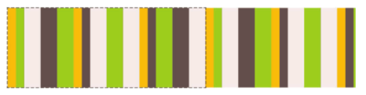
在图中可以看到，这样的结果显明更有随机的感觉；但如果仔细观察的话，仍然可以看出图案每隔 240px 就会重复一次。这个组合图案中第一个贴片的终点，就是各层背景图像以不同间距重复数次后再次统一对齐的点。让我们再次穿越回初中数学课堂：如果我们有一些数字，那么可以同时整除所有数字的最小数字就叫作它们的最小公倍数（LCM）。因此，这里贴片的尺寸实际上就是所有 background-size 的最小公倍数，而 40、60 和 80的最小公倍数正是 240。
根据这个逻辑，要让这种随机性更加真实，我们得把贴片的尺寸最大化。感谢数学，我们不需要苦苦思索如何做到这一点，因为我们已经知道答案了。为了让最小公倍数最大化，这些数字最好是“相对质数”。在这种情况下，它们的最小公倍数就是它们的乘积。举例来说，3、4 和 5 是相对质数，因此它们的最小公倍数就是 3×4×5=60。要达成相对质数，最简单的办法就是尽量选择质数，因为质数跟其他任意数字都是相对质数。在网上可以找到质数的清单，它们有的非常大。为了进一步增加随机性，我们甚至可以用质数来指定各组条纹的宽度。于是我们的代码变为：1
2
3
4
5
6background: hsl(20, 40%, 90%);
background-image:
linear-gradient(90deg, #fb3 11px, transparent 0),
linear-gradient(90deg, #ab4 23px, transparent 0),
linear-gradient(90deg, #655 41px, transparent 0);
background-size: 41px 100%, 61px 100%, 83px 100%
是的，我们的代码算不上完美，但想要在图中找到任何平铺接缝可不容易。平铺贴片的尺寸现在是 41×61×83=207 583 像素，比任何我们所能想像出的屏幕分辨率都要大！
See the Pen Pseudorandom stripes by XmoyKing (@xmoyking) on CodePen.
这个技巧被 Alex Walker 定名为“蝉原则”，他最先提出了通过质数来增加随机真实性的想法。请注意这个方法不仅适用于背景，还可以用于其他涉及有规律重复的情况。
在照片图库中，为每幅图片应用细微的伪随机旋转效果时，可以使用多个 :nth-child(a) 选择符，且让 a 是质数。
如果要生成一个动画，而且想让它看起来不是按照明显的规律在循环时，我们可以应用多个时长为质数的动画。（可以在 play.csssecrets.io/cicanimation 看到一个示例。）
连续的图像边框
有时我们想把一幅图案或图片应用为边框，而不是背景。举个例子，一个元素有一圈装饰性的边框，基本上就是一张图片被裁剪进了边框所在的方环区域。不仅如此，我们还希望这个元素的尺寸在扩大或缩小时，这幅图片都可以自动延伸并覆盖完整的边框区域。用 CSS 如何做到这一点呢？
这个时候，你的脑子里可能会有一个声音跳出来高声尖叫：“ border-image ！用 border-image ！只要有 border-image ，这根本就不是一个问题！”先别急，年轻人。我们先来回忆一下 border-image 是如何工作的。
它的原理基本上就是九宫格伸缩法：把图片切割成九块，然后把它们应用到元素边框相应的边和角。关于它的工作原理，下图提供了图形化的解说。
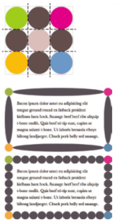
如何用 border-image 切割图片并生成图中的效果？就算我们针对特定的元素宽高和边框厚度找到了切割位置，这个结果也无法适配尺寸稍有差异的其他元素。问题在于，我们并不想让图片的某个特定部分固定在拐角处；而是希望出现在拐角处的图片区域是随着元素宽高和边框厚度的变化而变化的。只要你稍微尝试一下，就会立即得出结论：这用 border-image是不可能做到的。接下来我们该怎么办？
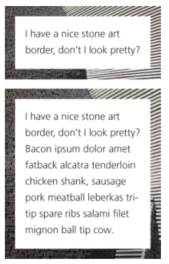
最简单的办法是使用两个 HTML 元素：一个元素用来把我们的石雕图片设为背景，另一个元素用来存放内容，并设置纯白背景，然后覆盖在前者之上1
2
3
4<div class="something-meaningful"><div>
I have a nice stone art border,
don't I look pretty?
</div></div>
1 | .something-meaningful { |
这个方法确实可以生成如图所示的“边框”效果，但需要一个额外的 HTML 元素。这显然不够理想：它不仅把结构和表现混合起来，而且在某些特定场景下，修改 HTML 是根本做不到的。问题来了：如果只用一个元素，我们能做到这个效果吗？
感谢背景与边框（第三版）（http://w3.org/TR/css3-background）引入了对 CSS 渐变和背景的扩展，使得我们只用一个元素就能达成完全一样的效果。主要的思路就是在石雕背景图片之上，再叠加一层纯白的实色背景。为了让下层的图片背景透过边框区域显示出来，我们需要给两层背景指定不同的 background-clip 值。最后一个要点在于，我们只能在多重背景的最底层设置背景色，因此需要用一道从白色过渡到白色的 CSS 渐变来模拟出纯白实色背景的效果。
把这个思路转换成代码之后，可能是：1
2
3
4
5padding: 1em;
border: 1em solid transparent;
background: linear-gradient(white, white), url(stone-art.jpg);
background-size: cover;
background-clip: padding-box, border-box;
正如我们在图中所看到的，这个结果跟我们想要的已经非常接近了。但边框的图片有一种怪异的拼接效果。原因是 background-origin 的默认值是 padding-box ，因此，图片的显示尺寸不仅取决于 padding box 的尺寸，而且被放置在了 padding box 的原点（左上角）。我们看到的实际上就是背景图片以平铺的方式蔓延到 border box 区域的效果。为了修正这个问题，只需把 background-origin 也设置为 border-box 就可以了：1
2
3
4
5
6padding: 1em;
border: 1em solid transparent;
background: linear-gradient(white, white),url(stone-art.jpg);
background-size: cover;
background-clip: padding-box, border-box;
background-origin: border-box;
这些新属性也是可以整合到 background 这个简写属性中的，这样可以显著地减少代码量：1
2
3
4padding: 1em;
border: 1em solid transparent;
background:
linear-gradient(white, white) padding-box, url(stone-art.jpg) border-box 0 / cover;
See the Pen Continuous image borders by XmoyKing (@xmoyking) on CodePen.
当然，这个技巧还可以用在渐变图案上。举个例子，下面这段代码可以生成一种老式信封样式的边框：
See the Pen Vintage envelope themed border by XmoyKing (@xmoyking) on CodePen.
1 | padding: 1em; |
你可以很容易地通过 background-size属性来改变条纹的宽度，通过 border 属性来改变整个边框的厚度。与之前的石雕边框的例子不同，这个效果也可以通过 border-image 来实现：1
2
3
4
5
6
7padding: 1em;
border: 16px solid transparent;
border-image: 16 repeating-linear-gradient(-45deg,
red 0, red 1em,
transparent 0, transparent 2em,
#58a 0, #58a 3em,
transparent 0, transparent 4em);
不过 border-image 方法存在一些问题。
每当我们改变 border-image-slice 时，都需要同时修改 border-width 来让它们相互匹配。
由于我们不能在 border-image-slice 属性中使用 em 单位，只能把边框厚度指定为像素单位。
条纹的宽度需要在色标的位置信息中写好，因此我们在改变条纹宽度时，需要修改四处。
这个技巧的另一个用武之地是生成好玩的蚂蚁行军边框！蚂蚁行军边框是一种虚线边框，看起在不断转动，就好像排队前进的蚂蚁一样（如果你把虚线上的线段想像成一只只蚂蚁的话）。这个技巧在图形界面中的大量应用可能完全出乎你的意料——几乎所有的图像编辑软件都会使用这个效果来标示选区
See the Pen Marching ants border by XmoyKing (@xmoyking) on CodePen.
为了创建蚂蚁行军效果，我们将会用到“老式信封”技巧的一个变种。我们将把条纹转变为黑白两色，并把边框的宽度减少至 1px （注意到斜向条纹是怎么转变成虚线边框的吗），然后再把 background-size 改为某个合适的值。最后，我们把 background-position 以动画的方式改变为 100% ，就可以让它滚动起来了：1
2
3
4
5
6
7
8
9@keyframes ants { to { background-position: 100% } }
.marching-ants {
padding: 1em;
border: 1px solid transparent;
background:
linear-gradient(white, white) padding-box,
repeating-linear-gradient(-45deg, black 0, black 25%, white 0, white 50%) 0 / .6em .6em;
animation: ants 12s linear infinite;
}
显然，这个技巧不仅在实现蚂蚁行军时很有用，还可以创建出各种特殊样式的虚线框：不管是为虚线线段指定不同的颜色，还是自定义线段的长度和间隙的长度，全都不在话下。
当前，如果要通过 border-image 来实现类似的效果，唯一的办法是为 border-image-source 指定一个 GIF 动画，就像chrisdanford 所展示的那样。当浏览器开始支持渐变插值的时候，我们还可以用渐变来实现它，只不过有点烦琐、不够 DRY。
当然， border-image 也有它强大的地方，尤其是在搭配渐变图案时更是威力倍增。举个例子，假设我们需要一个顶部边框被裁切的效果，就像一般的脚注那样。我们所需要的就是 border-image 属性再加上一条由渐变生成的垂直条纹，并把要裁切的长度在渐变中写好。边框线的粗细交给border-width 来控制。代码看起来是这样的：1
2
3border-top: .2em solid transparent;
border-image: 100% 0 0 linear-gradient(90deg, currentColor 4em, transparent 0);
padding-top: 1em;
不仅如此，由于我们把所有属性都指定为 em 单位，效果会根据 font-size 的变化而自动调整。另外，由于我们使用了currentColor ，它也会根据 color 属性的变化而自动适应（假设我们希望这条边框跟文字保持相同的颜色）。
See the Pen Footnote-style border by XmoyKing (@xmoyking) on CodePen.